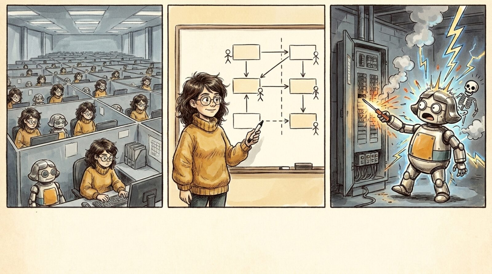

<section id="c01" data-transition="fade" style="background:#f5eee0">
  
  <div style="position:absolute; top:850px; left:28px; width:607px; display:flex; flex-direction:column; gap:8px; align-items:center">
    <p style="font-family:Arial, sans-serif; font-size:30px; font-weight:700; color:#c88a14">1</p>
    <h3 style="font-family:Arial, sans-serif; font-size:40px; font-weight:700; line-height:1.1; text-align:center; color:#222222">Tiny teams</h3>
  </div>
  <div style="position:absolute; top:850px; left:656px; width:611px; display:flex; flex-direction:column; gap:8px; align-items:center">
    <p style="font-family:Arial, sans-serif; font-size:30px; font-weight:700; color:#c88a14">2</p>
    <h3 style="font-family:Arial, sans-serif; font-size:40px; font-weight:700; line-height:1.1; text-align:center; color:#222222">Clear ownership interfaces</h3>
  </div>
  <div style="position:absolute; top:850px; left:1290px; width:603px; display:flex; flex-direction:column; gap:8px; align-items:center">
    <p style="font-family:Arial, sans-serif; font-size:30px; font-weight:700; color:#c88a14">3</p>
    <h3 style="font-family:Arial, sans-serif; font-size:40px; font-weight:700; line-height:1.1; text-align:center; color:#222222">Safety levels</h3>
  </div>
  <aside>Conclusions. One: think-to-demo is now minutes, so a second person mostly adds context-sharing cost and merge conflicts. One (maybe two) people per application, each with their own agents, is the fastest shape. It looks like a scary cubicle farm, but each cubicle is a whole team. Two: if every app has one owner, the boxes BETWEEN applications matter more than ever. Agents handle everything inside the box; anything that crosses an owner's line is where humans still have to talk. Three: not every change is equal. The deeper you go, the more it can hurt someone, so the more unlocks you need before you can even start. Robots included.</aside>
</section>
